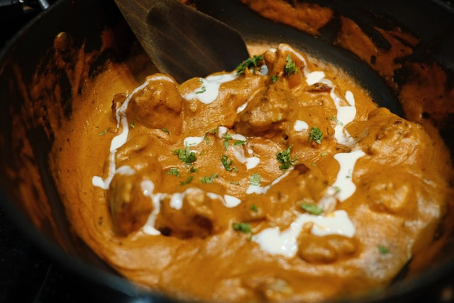

Home
Butter Chicken Recipe

Worlds Best Butter Chicken Recipe
Butter chicken, traditionally known as Murgh Makhani, (pronounced [mʊrg ˈmək.kʰə.ni]) is a type of curry made from chicken with a spiced tomato and butter (makhan) sauce. Its sauce is known for its rich texture. In addition sometimes the cream gives the curry sauce a silky smooth rich texture.
It is similar to chicken tikka masala, which uses a tomato paste.
Ingredients
- 1/2 kg chicken
- 1 teaspoon lemon juice
- 1/2 teaspoon salt
- Pinch Red chili powder
- 3/4 tablespoon oil
- 1 tablespoon ginger garlic paste
Steps
- Marinate the chicken and refrigerate.
- Make the Punjabi garam masala powder or decide on a good garam masala.
- Puree the tomatoes & cashews in a blender until smooth. Filter through a colander to remove the skin and seeds.
- If you do not have a powerful blender then soak the almonds or cashers for 1 to 2 hours and use.
- The color of the gravy may differ based on your red chili powder.
Sources
Image Unsplash
Intro from Wikipedia